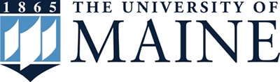

My whole life I was educated through public schooling, until high school. My parents thought it would be a good idea to switch me to a private school.
With much resistance, I finally decided to go to an all male Catholic high school named Bishop Hendricken. Thanks to my parents forcing me to go, it might have been the best decision of my life. Hendricken is a well renowned school in Rhode Island known for its high quality education and top notch athletics.
You may be asking why resist going there then? Up to that point in my life I wasn't challenged much in school and wasn't very exposed to change. I always coasted through school with ease and most of all, I didn't want to lose all my friends. Throughout my next four years, I forced myself to do activities and things I would never had done prior.
I studied a lot more and I actually cared about my work. I joined sports including track and field and made many new friends from it. Through track and field I met many new friends, two in which who are house mates with me here at UMaine. In the end, I was able to graduate Hendricken Cum Laude and got into every college I applied to.
That's where my next challenge started, I had to decide which college I wanted to go to. After careful consideration and thought I chose to go to University of Maine.
University of Maine

When I was initially choosing college I wanted to have an occupation that related to animals. Because of this, my decision for school was between University of Maine and Unity College. I ended up choosing UMaine because the campus was the perfect size and if I ever wanted to change my major I would be in trouble at Unity because it is very wildlife oriented there.
For the first year and a half at UMaine I was a wildlife ecology major. I've always loved dealing with animals, but I figured that WLE wasn't the right major for me. I decided to switch to business management because I've been exposed to the business side of life as my dad owns his own business. At the moment I am in my second semester of classes for business management and am very happy I ended up switching.